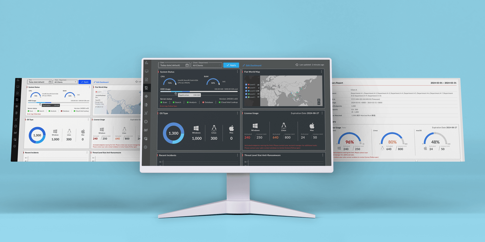

About this Project
Anti-Ransomware 端點防護與威脅鑑識平台，旨在針對端點（電腦）進行威脅檢測與識別，以有效應對勒索病毒攻擊，確保企業系統及機敏資料的安全。
在威脅攻擊發生前，平臺會持續收集威脅情報，並進行全面的事件分析，形成威脅情資資料庫。
在威脅攻擊發生時，能即時偵測威脅事件，快速分析判斷威脅程度，並採取預防措施。
在威脅攻擊發生後，產出威脅事件分析及處理報告，供企業事先防範並加強控管。
提供企業端點監控 (EDR) 與資安託管服務 (MSSP) 兩種服務，透過主動防護，收集可疑攻擊事件並進行即時分析，從而提升企業整體的安全防護能力。
Filter Enhancement
為管理者／代理商／客戶多重角色的 B to B 操作管理介面，Filter 覆蓋整個畫面單據／燈圖 Client / Department，保留原有的 Filter，優化後也能有一致性的元件樣觀。
每個功能因需要不同客戶單據／多項客戶以及多項／不同部門的需求，有多種 Filter，導致為多個 Clients、多選 Departments，造成拿取資料量負擔過多，讀取出來的資料也無法有系統的分群。
全面一致化資料搜尋，管理者／代理商可搜尋多個體／單一客戶的資料，但 Summary Report 限定單一客戶／各個部門，來延伸轉動至全站設定，其他功能員效優先再量化。
優化篩選原有的設計，設計一套單選 Client／橫選 Departments 的元件變化，也要解決資料量過大的問題。原為為選擇 Clients／橫選 Depts，此次優化單選 Clients／橫選 Depts 與原有的 Filter 操作一致，故提供三款設計規劃，經討論後採用 Optional 1 方案。
Custom Dashboard
Custom Dashboard Flow
因應 RWD 而重新規劃 Dashboard，各功能面面已完全，重新規劃可依客戶不同需求客製化的 Dashboard。
搜尋操作太複雜，資料不符客戶使用情境，即時監測卻不能進行資料分析頁。
搜尋操作變更為單一 Client／多個 Depts，只有 SuperAdmin 權限可以選 All clients，不可選 Dept；以此操作搜尋的資料才是有效的資料，可客製化對客戶重要的資料呈現，需要 Dark mode。
將個別功能微整成 widget 並提升數據，授權操作為單一 Client（橫選 Depts）／ All Clients 兩日期區間，可拖拉、改變尺寸、可縮圖。Grid 設定寬度有 4 格，高低固定 4 格，可往下延伸。可縮圖、拖拉、批拉功能，可達至詳細資料頁面，點擊數字背有放大凸顯的特效。

Dashboard Widgets
Widget 根據大、中、小尺寸，尺寸小是簡略數據，大尺寸可呈現時間區間為一個月的資料，hover 將出更詳細的數據，點擊重置欄位進入相同的選達條件，專頁詳細的資料頁，有縮圖、改變尺寸，更新資料監控功能，資料讀取時呈現 skeleton 減少載入時間的使用感，skeleton 同步縮大、中、小尺寸，也同時展現 widget 的 thumbnail 呈現。

Overview